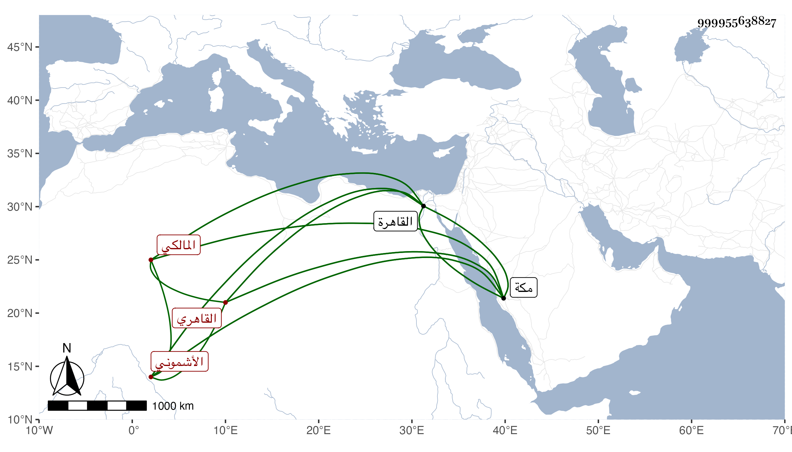

0902Sakhawi.DawLamic.ITO20230111-ara1.EIS1600.999955638827
Biography ID: 999955638827
354
أحمد بن محمد بن عبد الدائم الأشموني الأصل القاهري المالكي الآتي أبوه وذاك ابن أخت الشيخ مدين . ولد في ذي الحجة سنة تسع وستين وثمانمائة وحفظ القرآن وغيره واشتغل قليلا عند الزين الأبناسي وغيره وسمع علي بالقاهرة في شرح معاني الآثار وغيره ثم قرأ علي بمكة في سنة ثلاث وتسعين في الشفا وغيره ولازمني فيها وفي التي تليها في سماع أشياء وكتبت له إجازة وكان نور الدين الحسني أحد مريدي والده حين فارق مكة في موسم سنة اثنتين وتسعين استخلفه في مشيخة رباط السلطان فاستمر مقيما هناك ولكن يده محبوسة عن تمام التصرف وقد تزوج هناك وجاءتة بنة ، مع اشتغاله بالفقه وغيره عند بعض المغاربة وحضوره درس قاضي المالكية وانجماعه وجودة طريقته ، ثم رجع إلى القاهرة فاستقل وعاد في البحر أثناء سنة خمس وتسعين على خير من ملازمة التلاوة والذكر والاشتغال بالفقه وغيره مع كثرة أدبه وتودده كان الله له .
